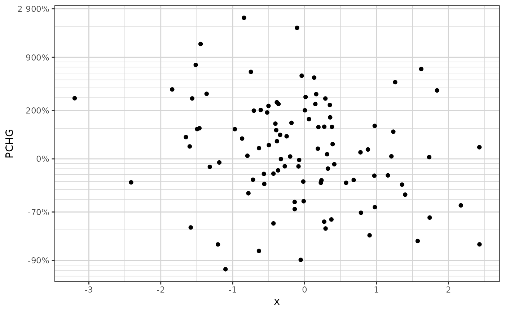

R/xgx_scale_y_percentchangelog10.R
xgx_scale_y_percentchangelog10.Rdxgx_scale_y_percentchangelog10 and xgx_scale_x_percentchangelog10 are designed
to be used with percent change (PCHG) from baseline data (on a scale of -1 to +Inf).
Common examples include
It is used when you have a wide range of data on a percent change scale,
especially data close to -100
xgx_scale_y_percentchangelog10(
breaks = NULL,
minor_breaks = NULL,
labels = NULL,
accuracy = 1,
n_breaks = 7,
...
)
xgx_scale_x_percentchangelog10(
breaks = NULL,
minor_breaks = NULL,
labels = NULL,
accuracy = 1,
n_breaks = 7,
...
)if NULL, then default is to use a variant of 2^(labeling::extended(log2(PCHG + 1))) - 1, where PCHG represents the range of the data
if NULL, then default is to use nicely spaced log10(PCHG + 1) minor breaks
if NULL, then the default is to use scales::percent_format()
accuracy to use with scales::percent_format(), if NULL, then the default is set to 1
number of desired breaks, if NULL, then the default is set to 7
other parameters passed to
scale_y_continuous
ggplot2 compatible scale object
dat1 <- data.frame(x = rnorm(100), PCHG = exp(rnorm(100)) - 1)
ggplot2::ggplot(dat1, ggplot2::aes(x = x, y = PCHG)) +
ggplot2::geom_point() +
xgx_theme() +
xgx_scale_y_percentchangelog10()
